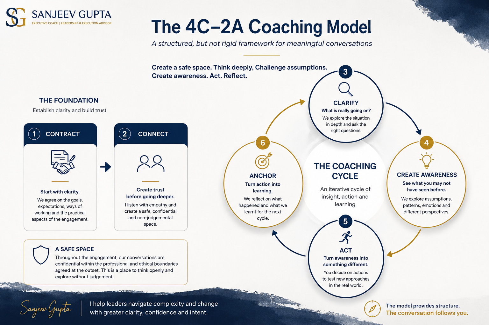

At the same time, meaningful coaching needs clarity about why we are working together, trust in the relationship and a way of turning conversations into meaningful action.
My approach is built around a simple principle: Create a safe space. Think deeply. Challenge assumptions. Create awareness. Act. Reflect.
Contract → Connect → Clarify ↔ Create Awareness ↔ Act ↔ Anchor
The model is structured, but not rigid. Contract and Connect establish the foundation for the engagement. Thereafter, Clarify ↔ Create Awareness ↔ Act ↔ Anchor operate as an iterative coaching cycle.
A meaningful engagement begins by understanding why we are having these conversations, what you would like to be different and what will make the engagement worthwhile. We agree the broad goals, expectations, ways of working and practical aspects of the engagement. Where coaching is sponsored by an organisation, contracting also creates clarity between the leader, sponsor and coach about the purpose and expected outcomes.

A coaching conversation does not always move neatly from one stage to the next. The structure provides direction. The conversation follows the client.
Organisation-sponsored coaching needs to balance two legitimate expectations: the organisation needs clarity about why it is investing in coaching, and the leader needs confidence that coaching provides a safe and confidential space.
At the start, we agree the broad goals of the engagement and the roles of the leader, sponsor and coach. The content of individual coaching conversations remains confidential within the professional and ethical boundaries agreed at the outset.
If progress conversations with the sponsor are part of the engagement, we agree beforehand what will be shared and how the leader will participate.
Clear contracting protects both purpose and trust.
You don't need to understand the complete 4C–2A model before we work together. The model provides structure in the background. What matters is the conversation in front of us.